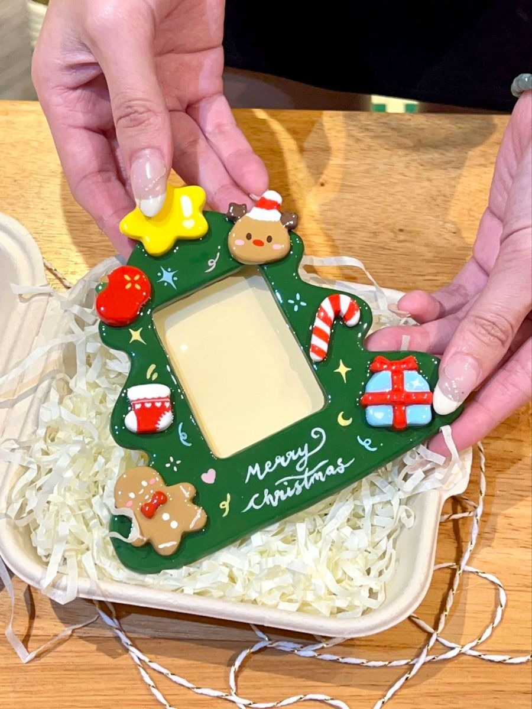

Cristina Luciano
Artesã de Artes Manuais
Artesã de Artes Manuais
Olá! Meu nome é Cristina Luciano, sou uma artesã apaixonada por criar peças únicas e personalizadas. Com anos de experiência em artes manuais, dedico-me a transformar ideias em realidade, utilizando técnicas tradicionais e modernas para produzir trabalhos de alta qualidade. Meu objetivo é trazer beleza e funcionalidade para o dia a dia das pessoas através das minhas criações.

Bolo fake cenográfico para aniversários temáticos de princesas,casamentos. Perfeito para criar uma atmosfera mágica em suas celebrações! Reparos de bolos cenográficos e Sob encomenda

Topos de bolo personalizados para aniversários e eventos especiais. Feitos com materiais de alta quality e design único.

Acessórios para bolos, como flores, animais e temas personalizados. Temos desde apliques a chaveiros personalizados.